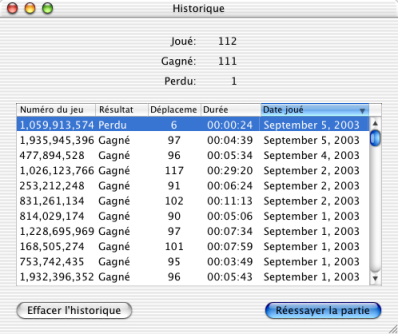

Aide de Freecell
Aide de Freecell
Freecell garde un enregistrement des parties que vous avez perdues et gagnées. Vous pouvez accéder à cette liste à partir du menu 'Freecell' > 'Historique...'

La liste ne garde qu'une seule entrée par numéro de jeu. Donc, si vous avez perdu une partie, vous pouvez la rejouer jusqu'à l'avoir gagnée afin de garder une liste parfaite.